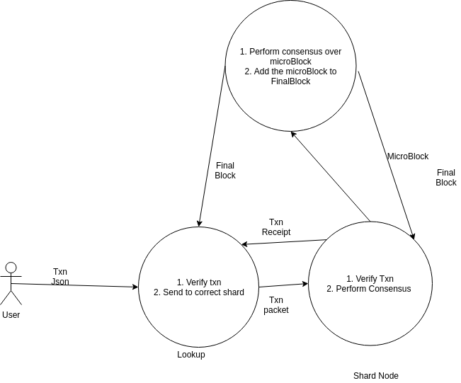

Transaction Dispatch
- User using the json rpc server sends a json to the Zilliqa api (calls the CreateTransaction function). The transaction json contains essential information about the transaction.
- The transaction json is then validated and then converted into the cpp class format.
- The lookup node then decides the shard of the txn to send to and stores the txn into a map. The key of the map is the shard number.
- After the lookup receives a ds or tx block, it dispatches these txns to the corresponding shards.
- After it reaches a shard, the shard node again validates this txn and then adds it to the txn mempool.
- The shard leader then proposes the list of txns to be included in the microblock, the other shard nodes then verify the corresponding txns.
- If the microblock is then included in the final block, the nodes commits the txns and sends the txn receipts to the lookup.
- The lookup use this receipt to tell the user the status of the txn.
